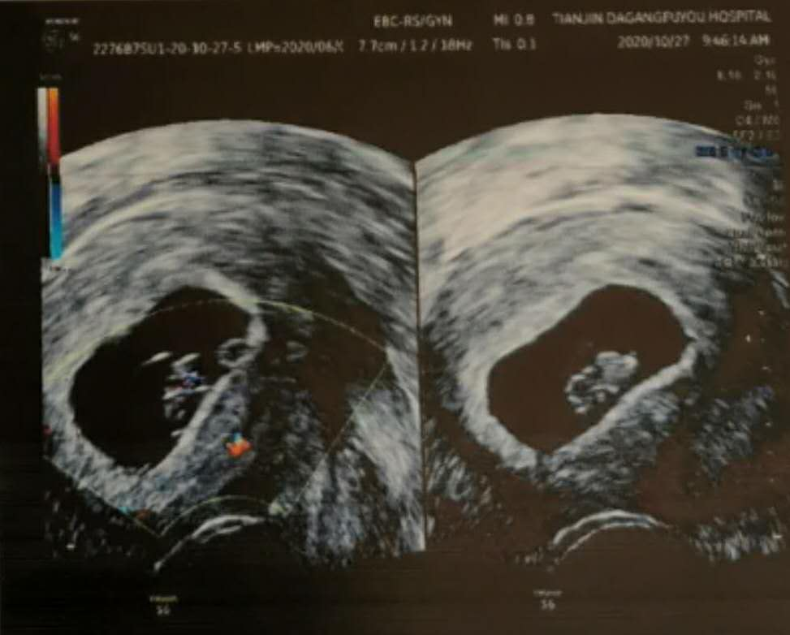

<!DOCTYPE html>


<html lang="zh-CN">


<head>
  <meta charset="utf-8" />
    
  <meta name="description" content="我们的故事" />
  
  <meta name="viewport" content="width=device-width, initial-scale=1, maximum-scale=1" />
  <title>
     我们的故事
  </title>
  <meta name="generator" content="hexo-theme-ayer">
  
  <link rel="shortcut icon" href="/favicon.ico" />
  
  
<link rel="stylesheet" href="/dist/main.css">

  
<link rel="stylesheet" href="https://cdn.jsdelivr.net/gh/Shen-Yu/cdn/css/remixicon.min.css">

  
<link rel="stylesheet" href="/css/custom.css">

  
  
<script src="https://cdn.jsdelivr.net/npm/pace-js@1.0.2/pace.min.js"></script>

  
  

  

</head>

</html>

<body>
  <div id="app">
    
      
    <main class="content on">
      
<section class="cover">
    
  <div class="cover-frame">
    <div class="bg-box">
      
    </div>
    <div class="cover-inner text-center text-white">
      <h1><a href="/">家</a></h1>
      <div id="subtitle-box">
        
        <span id="subtitle"></span>
        
      </div>
      <div>
        
      </div>
    </div>
  </div>
  <div class="cover-learn-more">
    <a href="javascript:void(0)" class="anchor"><i class="ri-arrow-down-line"></i></a>
  </div>
</section>


<script src="https://cdn.jsdelivr.net/npm/typed.js@2.0.11/lib/typed.min.js"></script>


<!-- Subtitle -->

  <script>
    try {
      var typed = new Typed("#subtitle", {
        strings: ['无关岁月，只要有你', '自此余生，爱你无他', '我们在的地方就是家'],
        startDelay: 0,
        typeSpeed: 200,
        loop: true,
        backSpeed: 100,
        showCursor: true
      });
    } catch (err) {
      console.log(err)
    }
  </script>
  
<div id="main">
  <section class="outer">
  
  <article class="articles">
    
    
    
    
    <article
  id="post-精力旺盛的小家伙"
  class="article article-type-post"
  itemscope
  itemprop="blogPost"
  data-scroll-reveal
>
  <div class="article-inner">
    
    <header class="article-header">
       
<h2 itemprop="name">
  <a class="article-title" href="/2021/03/23/%E7%B2%BE%E5%8A%9B%E6%97%BA%E7%9B%9B%E7%9A%84%E5%B0%8F%E5%AE%B6%E4%BC%99/"
    >精力旺盛的小家伙</a> 
</h2>
 

    </header>
     
    <div class="article-meta">
      <a href="/2021/03/23/%E7%B2%BE%E5%8A%9B%E6%97%BA%E7%9B%9B%E7%9A%84%E5%B0%8F%E5%AE%B6%E4%BC%99/" class="article-date">
  <time datetime="2021-03-23T08:12:09.560Z" itemprop="datePublished">2021-03-23</time>
</a>    
    </div>
      
    <div class="article-entry" itemprop="articleBody">
       
  <p>眼看步入孕晚期，妈妈的肚子也像吹气球一样鼓了起来，直到拿起对比照才发现时间过得这么快。哦哟，你最近动得越来越频繁了，每天不是在妈妈肚子里打拳就是一脚把妈妈踹醒，有时候还打嗝，也不知道是不是打拳把自己呛到了。看来你是个精力旺盛的小家伙，但是一定要把力气留到白天，等出生那天要是夜里折腾起来，没有大夫护士可就麻烦了。爸爸知道，你在黑漆漆的肚子里也分不清白天晚上，但是每天晚上爸爸都给妈妈肚子抹油，你应该能感觉到两只大手在揉来揉去吧，那就是爸爸在告诉你，宝宝乖，该睡觉了。</p>


<p>每次你拳打脚踢不老实的时候，爸爸把手按在妈妈肚皮上，你都会停下来，妈妈说你是在害怕，不知道什么东西在附近。但我觉得你肯定是能感觉到爸爸，有爸爸在就踏实，是不是？但是爸爸不在家的时候你也不要老是折腾妈妈，要做一个安安静静的乖宝宝。现在是29周，你已经能听到声音了，那每天晚上爸爸贴在妈妈肚皮上跟你说话，你一定也能听到吧，要记得爸爸的声音，以后不管到哪，不管遇到什么事，你听到这个声音，就知道有爸爸在你身边，保护你。</p>
<p>现在爸爸一想到你，满脑子都是四维照片里你敬礼的姿势和咧着小嘴的笑容，原来真的会有这么可爱的宝宝，在妈妈肚子里就已经知道卖萌了，爸爸老是忍不住要拿你的照片和别人炫耀。等你出生以后，要是长得太漂亮、太可爱，那爸爸可能要飘上天了。但是爸爸相信，你给爸爸带来的骄傲和自豪一定会越来越多。</p>


<p>还有2个多月，我们就能见面了，爸爸和妈妈每天都在激动着，兴奋着。期待我们的第一次见面，小哦哟！</p>
 
      <!-- reward -->
      
    </div>
    

    <!-- copyright -->
    
    <footer class="article-footer">
       
    </footer>
  </div>

    
 
   
</article>

    
    <article
  id="post-转危为安"
  class="article article-type-post"
  itemscope
  itemprop="blogPost"
  data-scroll-reveal
>
  <div class="article-inner">
    
    <header class="article-header">
       
<h2 itemprop="name">
  <a class="article-title" href="/2020/10/28/%E8%BD%AC%E5%8D%B1%E4%B8%BA%E5%AE%89/"
    >转危为安</a> 
</h2>
 

    </header>
     
    <div class="article-meta">
      <a href="/2020/10/28/%E8%BD%AC%E5%8D%B1%E4%B8%BA%E5%AE%89/" class="article-date">
  <time datetime="2020-10-28T02:56:01.234Z" itemprop="datePublished">2020-10-28</time>
</a>    
    </div>
      
    <div class="article-entry" itemprop="articleBody">
       
  <p>宝宝，爸爸今天开篇就要表扬你，你真是太乖了！</p>
<p>妈妈今天去复查，一切异常的症状都没有了，也不需要再吃药，只要继续休养，其他一切正常。B超的结果显示，你已经有4cm大了，像一颗小红枣。</p>


<p>这个消息让全家人悬着的心都放了下来，妈妈开心得都要哭了，爷爷奶奶姥姥姥爷也都笑开了花。你知道吗，你的健康就是全家最大的希望。</p>
<p>但是今天从爷爷那里又了解到一个揪心的事情，爸爸是B型血，妈妈是O型血，宝宝你的血型有一定概率跟妈妈的不合，从而可能导致溶血症状，那就十分危险了。爷爷说4个月的时候要去医院检查，确认是否有这个风险。宝宝，这是你的下一个考验，你一定要健康，顺顺利利地来到这个世界。</p>
<p>爸爸不懂医学，但是从你和妈妈目前的状况来看，非常健康，爸爸相信接下来的几个月我们一定平稳度过，加油！</p>
 
      <!-- reward -->
      
    </div>
    

    <!-- copyright -->
    
    <footer class="article-footer">
       
    </footer>
  </div>

    
 
   
</article>

    
    <article
  id="post-一次揪心的复查"
  class="article article-type-post"
  itemscope
  itemprop="blogPost"
  data-scroll-reveal
>
  <div class="article-inner">
    
    <header class="article-header">
       
<h2 itemprop="name">
  <a class="article-title" href="/2020/10/21/%E4%B8%80%E6%AC%A1%E6%8F%AA%E5%BF%83%E7%9A%84%E5%A4%8D%E6%9F%A5/"
    >一次揪心的复查</a> 
</h2>
 

    </header>
     
    <div class="article-meta">
      <a href="/2020/10/21/%E4%B8%80%E6%AC%A1%E6%8F%AA%E5%BF%83%E7%9A%84%E5%A4%8D%E6%9F%A5/" class="article-date">
  <time datetime="2020-10-21T02:10:06.107Z" itemprop="datePublished">2020-10-21</time>
</a>    
    </div>
      
    <div class="article-entry" itemprop="articleBody">
       
  <p>早些时候，由于舒老师走动过多，致使有轻微出血的现象，医院开了保胎药，从此舒老师踏上静卧保胎的道路。</p>
<p>昨天如期带舒老师去复查，结果却不由得让人揪心。</p>
<p>B超结果的原话是“胎囊下方有不规则衰减区”，翻译过来就是胎囊出血，B超图像上清晰可见的是零零星星的血块。拿到结果的瞬间，我和舒老师的心都提了起来，虽然不懂术语，但从字面意思上，多少能明白这不是好消息。出血的不是别处，是胎囊，是宝宝自己。</p>
<p>所幸医生并没有对此有过多的危险描述，只是照常开了药，让继续保胎。唯一特殊叮嘱的是，一旦腹痛且出血过多，就要及时送医。</p>
<p>我想要是医生哪怕多说一点怕人的话，诊室里不让家属陪同的舒老师恐怕都要承受不住。尽管如此，我还是从踏出诊室的舒老师眼角察觉到一丝微红。</p>
<p>回家的路上，我安慰舒老师，医生没说严重就不去想它，踏踏实实吃药，老老实实静躺，宝宝坚强着呢。但是，在沉默的空当，我却怎么说服不了自己，握着方向盘的手，直到下车还是冰凉。</p>
<p>说真的，宝宝，爸爸不求你荣华富贵，但是你一定要健康。之前是爸爸不对，没意识到你和妈妈已经承受不了走路的运动量，害你们有了症状。但是爸爸也相信你和妈妈一样坚强，妈妈现在乖得很，不爬高不乱跑，好吃的也不乱吃，接下来就看你了，你也要乖乖的，不要再吓唬爸爸妈妈了，跟妈妈一起加油吧！</p>
 
      <!-- reward -->
      
    </div>
    

    <!-- copyright -->
    
    <footer class="article-footer">
       
    </footer>
  </div>

    
 
   
</article>

    
    <article
  id="post-幸福开始的地方"
  class="article article-type-post"
  itemscope
  itemprop="blogPost"
  data-scroll-reveal
>
  <div class="article-inner">
    
    <header class="article-header">
       
<h2 itemprop="name">
  <a class="article-title" href="/2020/10/14/%E5%B9%B8%E7%A6%8F%E5%BC%80%E5%A7%8B%E7%9A%84%E5%9C%B0%E6%96%B9/"
    >幸福开始的地方</a> 
</h2>
 

    </header>
     
    <div class="article-meta">
      <a href="/2020/10/14/%E5%B9%B8%E7%A6%8F%E5%BC%80%E5%A7%8B%E7%9A%84%E5%9C%B0%E6%96%B9/" class="article-date">
  <time datetime="2020-10-14T03:25:48.067Z" itemprop="datePublished">2020-10-14</time>
</a>    
    </div>
      
    <div class="article-entry" itemprop="articleBody">
       
  <blockquote>
<p>记于老婆怀孕后的第一个结婚纪念日</p>
</blockquote>
<p>今天是我们结婚2周年纪念日，也是得知小生命存在的第18天。我觉得有必要寻找一个地方，一个只属于我们的秘密空间，安放我们还未到来的故事和心情。</p>
<p>还记得三周前，舒老师把怀孕的消息告诉我的那个瞬间——2020年9月27日20点05分，我，要当爸爸了。直到现在，都仿佛做梦一样，一个由我们孕育的小生命，此时此刻正在不断生长着，静静等待着。</p>
<p>我无法抑制地开始想象宝宝的样子，像一个新手面点师，在烤箱前焦急地等待面包出炉，忐忑而又期待。我好奇他/她的一切，也在担心自己是否能做一个称职的父亲。</p>
<p>幸福来得太快，但随之而来的，还有孩子妈妈身体的变化。短短几周时间，舒老师胃口大减，持续不断的孕吐反应让她几乎告别了所有美食，甚至对平时最爱吃的虾都失去了兴趣。舒老师每一次干呕，和干呕完红红的眼角，都像锥子一样扎在我的心里，让我感觉眼前的女人，分明还是个孩子。</p>
<p>除了孕吐，舒老师的身体也变得脆弱，每动一下都是负担，躺也不是，坐也不是，跟平时上蹿下跳活力四射的舒老师派若两人。舒老师开玩笑说，看来我还是高估了自己，还说怀孕以后要东跑西颠大吃大喝呢。但舒老师的语气越轻松，我的心就越疼。</p>
<p>宝宝，希望你是个懂事的孩子，在妈妈的肚子里乖乖成长，不要调皮，妈妈真的很不容易。</p>
<p>当然，我知道这只是开始，后面还有更多的考验在等着我们。但是我也相信，宝宝就是我们的动力，不管未来是苦是甜，我们都会手牵着手，风雨与共。</p>
<p>爱你，哦不，爱你们！</p>
<p></p>
 
      <!-- reward -->
      
    </div>
    

    <!-- copyright -->
    
    <footer class="article-footer">
       
    </footer>
  </div>

    
 
   
</article>

    
  </article>
  

  
</section>
</div>

      <footer class="footer">
  <div class="outer">
    <ul>
      <li>
        Copyrights &copy;
        2020-2021
        <i class="ri-heart-fill heart_icon"></i> Colin
      </li>
    </ul>
    <ul>
      <li>
        
        
        
        由 <a href="https://hexo.io" target="_blank">Hexo</a> 强力驱动
        <span class="division">|</span>
        主题 - <a href="https://github.com/Shen-Yu/hexo-theme-ayer" target="_blank">Ayer</a>
        
      </li>
    </ul>
    <ul>
      <li>
        
      </li>
    </ul>
    <ul>
      
    </ul>
    <ul>
      
    </ul>
    <ul>
      <li>
        <!-- cnzz统计 -->
        
      </li>
    </ul>
  </div>
</footer>
      <div class="float_btns">
        <div class="totop" id="totop">
  <i class="ri-arrow-up-line"></i>
</div>

<div class="todark" id="todark">
  <i class="ri-moon-line"></i>
</div>

      </div>
    </main>
    <aside class="sidebar on">
      <button class="navbar-toggle"></button>
<nav class="navbar">
  
  <div class="logo">
    <a href="/"></a>
  </div>
  
  <ul class="nav nav-main">
    
    <li class="nav-item">
      <a class="nav-item-link" href="/">主页</a>
    </li>
    
    <li class="nav-item">
      <a class="nav-item-link" href="/archives">归档</a>
    </li>
    
  </ul>
</nav>
<nav class="navbar navbar-bottom">
  <ul class="nav">
    <li class="nav-item">
      
      <a class="nav-item-link nav-item-search"  title="搜索">
        <i class="ri-search-line"></i>
      </a>
      
      
    </li>
  </ul>
</nav>
<div class="search-form-wrap">
  <div class="local-search local-search-plugin">
  <input type="search" id="local-search-input" class="local-search-input" placeholder="Search...">
  <div id="local-search-result" class="local-search-result"></div>
</div>
</div>
    </aside>
    <script>
      if (window.matchMedia("(max-width: 768px)").matches) {
        document.querySelector('.content').classList.remove('on');
        document.querySelector('.sidebar').classList.remove('on');
      }
    </script>
    <div id="mask"></div>

<!-- #reward -->
<div id="reward">
  <span class="close"><i class="ri-close-line"></i></span>
  <p class="reward-p"><i class="ri-cup-line"></i>请我喝杯咖啡吧~</p>
  <div class="reward-box">
    
    <div class="reward-item">
      
      <span class="reward-type">支付宝</span>
    </div>
    
    
    <div class="reward-item">
      
      <span class="reward-type">微信</span>
    </div>
    
  </div>
</div>
    
<script src="/js/jquery-2.0.3.min.js"></script>


<script src="/js/lazyload.min.js"></script>

<!-- Tocbot -->

<script src="https://cdn.jsdelivr.net/npm/jquery-modal@0.9.2/jquery.modal.min.js"></script>
<link rel="stylesheet" href="https://cdn.jsdelivr.net/npm/jquery-modal@0.9.2/jquery.modal.min.css">
<script src="https://cdn.jsdelivr.net/npm/justifiedGallery@3.7.0/dist/js/jquery.justifiedGallery.min.js"></script>

<script src="/dist/main.js"></script>

<!-- ImageViewer -->

<!-- Root element of PhotoSwipe. Must have class pswp. -->
<div class="pswp" tabindex="-1" role="dialog" aria-hidden="true">

    <!-- Background of PhotoSwipe. 
         It's a separate element as animating opacity is faster than rgba(). -->
    <div class="pswp__bg"></div>

    <!-- Slides wrapper with overflow:hidden. -->
    <div class="pswp__scroll-wrap">

        <!-- Container that holds slides. 
            PhotoSwipe keeps only 3 of them in the DOM to save memory.
            Don't modify these 3 pswp__item elements, data is added later on. -->
        <div class="pswp__container">
            <div class="pswp__item"></div>
            <div class="pswp__item"></div>
            <div class="pswp__item"></div>
        </div>

        <!-- Default (PhotoSwipeUI_Default) interface on top of sliding area. Can be changed. -->
        <div class="pswp__ui pswp__ui--hidden">

            <div class="pswp__top-bar">

                <!--  Controls are self-explanatory. Order can be changed. -->

                <div class="pswp__counter"></div>

                <button class="pswp__button pswp__button--close" title="Close (Esc)"></button>

                <button class="pswp__button pswp__button--share" style="display:none" title="Share"></button>

                <button class="pswp__button pswp__button--fs" title="Toggle fullscreen"></button>

                <button class="pswp__button pswp__button--zoom" title="Zoom in/out"></button>

                <!-- Preloader demo http://codepen.io/dimsemenov/pen/yyBWoR -->
                <!-- element will get class pswp__preloader--active when preloader is running -->
                <div class="pswp__preloader">
                    <div class="pswp__preloader__icn">
                        <div class="pswp__preloader__cut">
                            <div class="pswp__preloader__donut"></div>
                        </div>
                    </div>
                </div>
            </div>

            <div class="pswp__share-modal pswp__share-modal--hidden pswp__single-tap">
                <div class="pswp__share-tooltip"></div>
            </div>

            <button class="pswp__button pswp__button--arrow--left" title="Previous (arrow left)">
            </button>

            <button class="pswp__button pswp__button--arrow--right" title="Next (arrow right)">
            </button>

            <div class="pswp__caption">
                <div class="pswp__caption__center"></div>
            </div>

        </div>

    </div>

</div>

<link rel="stylesheet" href="https://cdn.jsdelivr.net/npm/photoswipe@4.1.3/dist/photoswipe.min.css">
<link rel="stylesheet" href="https://cdn.jsdelivr.net/npm/photoswipe@4.1.3/dist/default-skin/default-skin.min.css">
<script src="https://cdn.jsdelivr.net/npm/photoswipe@4.1.3/dist/photoswipe.min.js"></script>
<script src="https://cdn.jsdelivr.net/npm/photoswipe@4.1.3/dist/photoswipe-ui-default.min.js"></script>

<script>
    function viewer_init() {
        let pswpElement = document.querySelectorAll('.pswp')[0];
        let $imgArr = document.querySelectorAll(('.article-entry img:not(.reward-img)'))

        $imgArr.forEach(($em, i) => {
            $em.onclick = () => {
                // slider展开状态
                // todo: 这样不好，后面改成状态
                if (document.querySelector('.left-col.show')) return
                let items = []
                $imgArr.forEach(($em2, i2) => {
                    let img = $em2.getAttribute('data-idx', i2)
                    let src = $em2.getAttribute('data-target') || $em2.getAttribute('src')
                    let title = $em2.getAttribute('alt')
                    // 获得原图尺寸
                    const image = new Image()
                    image.src = src
                    items.push({
                        src: src,
                        w: image.width || $em2.width,
                        h: image.height || $em2.height,
                        title: title
                    })
                })
                var gallery = new PhotoSwipe(pswpElement, PhotoSwipeUI_Default, items, {
                    index: parseInt(i)
                });
                gallery.init()
            }
        })
    }
    viewer_init()
</script>

<!-- MathJax -->

<!-- Katex -->

<!-- busuanzi  -->

<!-- ClickLove -->

<!-- ClickBoom1 -->

<!-- ClickBoom2 -->

<!-- CodeCopy -->


<link rel="stylesheet" href="/css/clipboard.css">

<script src="https://cdn.jsdelivr.net/npm/clipboard@2/dist/clipboard.min.js"></script>
<script>
  function wait(callback, seconds) {
    var timelag = null;
    timelag = window.setTimeout(callback, seconds);
  }
  !function (e, t, a) {
    var initCopyCode = function(){
      var copyHtml = '';
      copyHtml += '<button class="btn-copy" data-clipboard-snippet="">';
      copyHtml += '<i class="ri-file-copy-2-line"></i><span>COPY</span>';
      copyHtml += '</button>';
      $(".highlight .code pre").before(copyHtml);
      $(".article pre code").before(copyHtml);
      var clipboard = new ClipboardJS('.btn-copy', {
        target: function(trigger) {
          return trigger.nextElementSibling;
        }
      });
      clipboard.on('success', function(e) {
        let $btn = $(e.trigger);
        $btn.addClass('copied');
        let $icon = $($btn.find('i'));
        $icon.removeClass('ri-file-copy-2-line');
        $icon.addClass('ri-checkbox-circle-line');
        let $span = $($btn.find('span'));
        $span[0].innerText = 'COPIED';
        
        wait(function () { // 等待两秒钟后恢复
          $icon.removeClass('ri-checkbox-circle-line');
          $icon.addClass('ri-file-copy-2-line');
          $span[0].innerText = 'COPY';
        }, 2000);
      });
      clipboard.on('error', function(e) {
        e.clearSelection();
        let $btn = $(e.trigger);
        $btn.addClass('copy-failed');
        let $icon = $($btn.find('i'));
        $icon.removeClass('ri-file-copy-2-line');
        $icon.addClass('ri-time-line');
        let $span = $($btn.find('span'));
        $span[0].innerText = 'COPY FAILED';
        
        wait(function () { // 等待两秒钟后恢复
          $icon.removeClass('ri-time-line');
          $icon.addClass('ri-file-copy-2-line');
          $span[0].innerText = 'COPY';
        }, 2000);
      });
    }
    initCopyCode();
  }(window, document);
</script>


<!-- CanvasBackground -->


<script src="/js/dz.js"></script>


    
  </div>
</body>

</html>